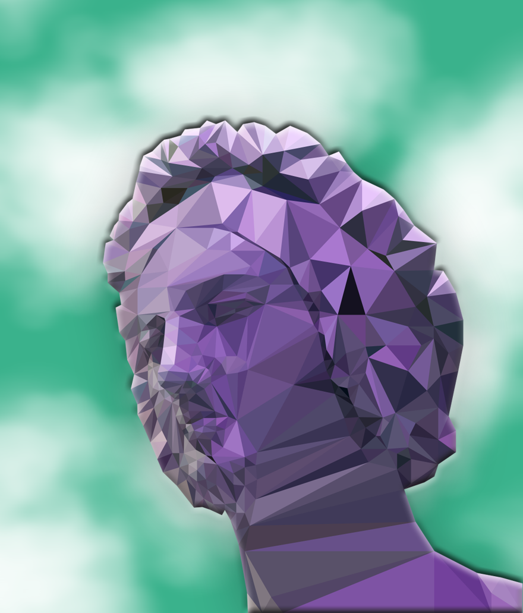
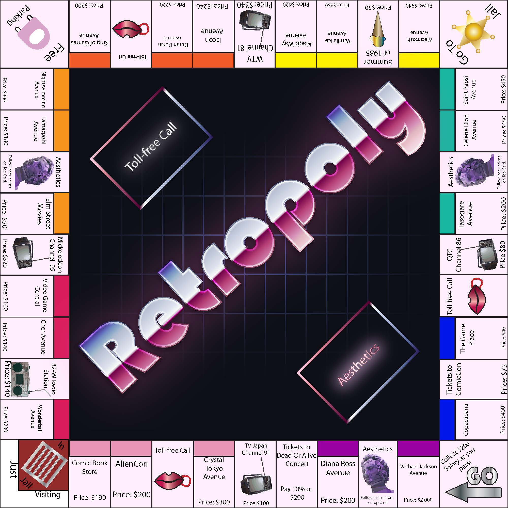
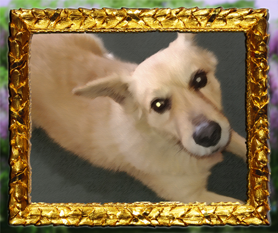

Bryan Nazario's Resume
Bio
Welcome and feel free to look into the works of Bryan Nazario. Bryan Nazario is currently a student majoring in graphic design. He focuses on his dream using his photo manipulation skills. Although he has photo manipulation skills, he also has skills in illustration and web design. He posts his works in Facebook and Linkedin. For his recent works, checkout his facebook account.
Skills
- Digital Media
- Graphic Design
- Image Manipulation
- Web Design
- Photo Editing
- User-Inferface Design
- Illustration
- Video Editing
- Video Production
- Digital Publishing
Software
- Adobe Photoshop
- Adobe Illustrator
- Adobe InDesign
- Adobe Dreamweaver
- Adobe After Effects
Social Media/Web
FaceBook
LinkedIn
Fid Repo Link
GitHub
Work Samples
Painted Bust

Polygonal Moods
Path to Nirvana

Retropoly

Compassion of Zulyn